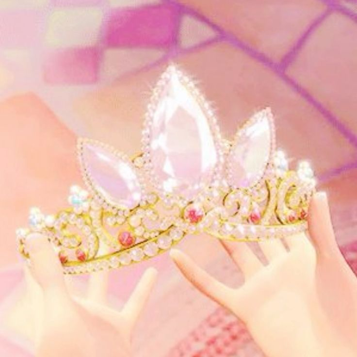

1. Persinette (1698) – Ditulis oleh Charlotte-Rose de Caumont de La Force, seorang penulis dari Prancis.
Dalam versi ini, tokoh utamanya bernama Persinette, bukan Rapunzel. Ceritanya hampir sama :Seorang gadis muda dengan rambut panjang dikurung di menara oleh seorang wanita tua.
Cerita ini diterbitkan sekitar tahun 1698 dan dianggap sebagai inspirasi utama bagi versi Grimm.
2. Petrosinella (1634) – Diceritakan oleh Giambattista Basile, seorang penulis dari Italia Selatan.
Dalam bahasa Italia, Petrosinella berarti “peterseli kecil” (parsley), nama tanaman yang juga menyebabkan ibu Petrosinella kehilangan anaknya.Versi ini lebih gelap dan mengandung unsur sihir khas dongeng abad ke-17.
3. Versi Brothers Grimm (1812)
Ketika Brothers Grimm menulis ulang cerita ini pada awal abad ke-19, mereka menyesuaikan ceritanya agar sesuai dengan nilai-nilai moral Jerman pada masa itu.Mereka memberi nama gadis itu “Rapunzel”, diambil dari nama sejenis tanaman sayuran hijau ( lamb’s lettuce atau rampion dalam bahasa Inggris ).
4. Dalam versi Grimm:
- Seorang suami mencuri tanaman rapunzel dari kebun seorang penyihir untuk istrinya yang sedang hamil.- Sebagai hukuman, penyihir menuntut bayi mereka.
- Bayi itu diberi nama Rapunzel dan dikurung di menara tinggi tanpa pintu.
- Seorang pangeran menemukan Rapunzel dan mereka jatuh cinta.
- Setelah banyak penderitaan, mereka akhirnya bersatu kembali dan hidup bahagia.